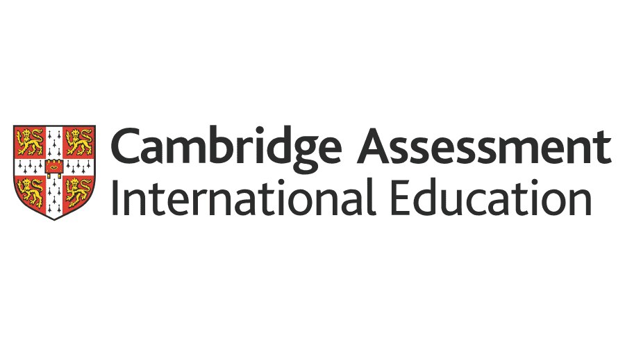
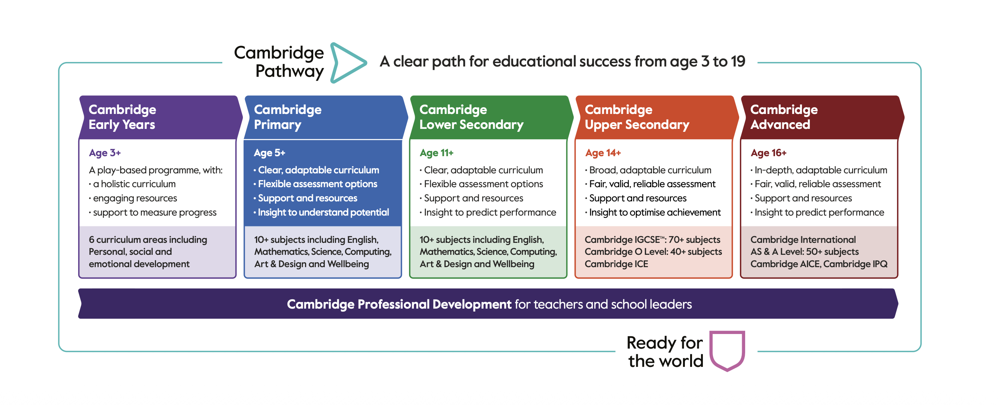
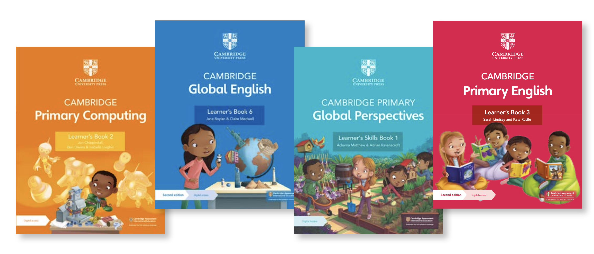

Preparing students for global success through rigorous academic standards and analytical skills.
Redemption International School is proud to introduce the Cambridge International Curriculum, one of the world's most respected and widely recognised systems of education, alongside our established ACE programme. Developed by Cambridge Assessment International Education, the curriculum gives learners a clear, well-structured pathway from age 5 through to 19, built on strong foundations in literacy, numeracy, and science, and designed to grow critical thinking, independence, and a genuinely global outlook.
At RIS, we deliver this world-class academic structure within the same caring, Christ-centred environment our families already know us for, giving parents a curriculum choice that fits their child's needs while keeping our values, small class sizes, and personal attention at the centre of every learner's journey.
Start Your Application
A clear, seamless journey through education from age 3 to 19.

Cambridge gives RIS learners an internationally benchmarked academic standard that is recognised by universities and employers around the world, while still being taught within the values-based, family-oriented environment RIS is known for.
Just as with our ACE programme, Cambridge learners at RIS benefit from small class sizes, personalised attention, and a faculty committed to nurturing the whole child academically, socially, and spiritually. Paired with our existing offering in German, French, Spanish, and Kiswahili, and our programmes in AI, robotics, and coding, Cambridge adds another strong option for parents who want a globally recognised qualification pathway for their child without leaving the RIS family.
Internationally recognised qualifications (IGCSE, AS & A Level).
Taught within a Christ-centred, values-driven environment.
Small class sizes and personalised support for every child.
A clear academic pathway from age 3 to 19.
Admission to the Cambridge programme at RIS is open to learners from any stage of Cambridge pathway. New applicants undergo a simple placement assessment / interview to ensure the right stage placement.
View Admission RequirementsFind answers to common questions about the Cambridge Curriculum at RIS. If you have more questions, feel free to contact our admissions team.
Yes. RIS now offers the Cambridge International Curriculum alongside our ACE programme, giving parents a choice of two strong, values-aligned academic pathways for their children.
Cambridge Primary welcomes learners from age 5, with entry possible at later stages depending on placement assessment.
